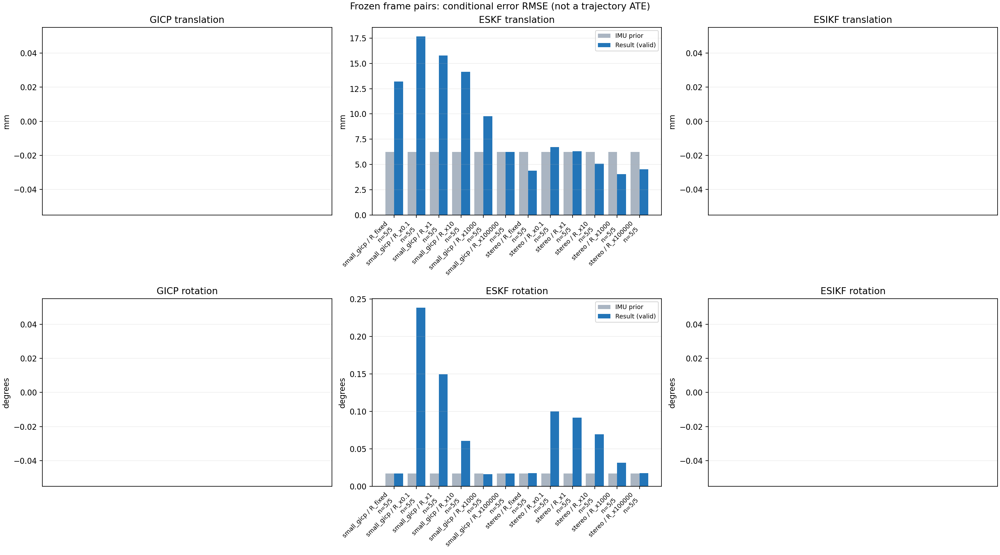

20261015_112553_up · depth=disparity_cache · cache=8877786990aa4402feba
模型视差：/home/ubuntu22/slam/SIO_SLAM/models/tensorrt/disp_896x448_fp16.plan；engine SHA256=604cf6ac1f705c877260711730dd5d2d58c2a21f3020c03c668401ef7fb1e768。输入为生产裁剪与光照处理后的 RGB 0..255；此实验使用原始浮点像素视差，不应用完整前端的邻域视差后处理。
原始 ONNX SHA256：e9f49736a65d68d06681add463866b6defdf78fdd7f4f50f6cc941b682fdc0bc。
代价体图改写验证：ONNX Runtime 固定随机特征输入，最大绝对误差 0；该项检查图改写，完整模型精度仍需由录制数据评估。
配准代码版本：744ac2d993ae629b0cc44a3b1d995e04ab4fad48；观测生成版本：744ac2d993ae629b0cc44a3b1d995e04ab4fad48。
固定图像对与纯 IMU 先验；ESKF 回放固定 GICP 观测，ESIKF 直接读取点云。真值只用于此报告。
同时查看 converged 与 solver_status：上游默认 Stereo 在 max_iter / stopped_at_minimum 时也可能置 converged=true。valid 表示输入检查通过，不表示精度提升。欧氏 GICP 未提供独立的点距 RMSE，该列显示 NaN。
误差按每对图像的锚点计算，单位 m / degrees。此处 RMSE 不是全序列 ATE；末帧受同一锚点条件约束。NIS 与条件马氏距离是诊断量，少量相关图像对不能用于宣称协方差已校准。
全部指标 CSV · R / P / K 矩阵 CSV · Stereo 求解逐轮 CSV · ESIKF 逐轮 CSV · 配置快照 · 矢量图
| stage | method | variant | valid | total | translation RMSE (m) | rotation RMSE (deg) |
|---|---|---|---|---|---|---|
| eskf | small_gicp | R_fixed | 5 | 5 | 0.013192 | 0.016754 |
| eskf | small_gicp | R_x0.1 | 5 | 5 | 0.017661 | 0.23862 |
| eskf | small_gicp | R_x1 | 5 | 5 | 0.015772 | 0.14934 |
| eskf | small_gicp | R_x10 | 5 | 5 | 0.014173 | 0.060524 |
| eskf | small_gicp | R_x1000 | 5 | 5 | 0.0097582 | 0.015864 |
| eskf | small_gicp | R_x100000 | 5 | 5 | 0.0062334 | 0.016845 |
| eskf | stereo | R_fixed | 5 | 5 | 0.0043855 | 0.017401 |
| eskf | stereo | R_x0.1 | 5 | 5 | 0.0067111 | 0.099982 |
| eskf | stereo | R_x1 | 5 | 5 | 0.0063134 | 0.091594 |
| eskf | stereo | R_x10 | 5 | 5 | 0.0050601 | 0.069261 |
| eskf | stereo | R_x1000 | 5 | 5 | 0.0040524 | 0.031498 |
| eskf | stereo | R_x100000 | 5 | 5 | 0.0045142 | 0.017491 |

| stage | case | method | variant | status | solver_status | inliers | converged | covariance_convention | covariance_from_hessian | fitness | registration_rmse_m | prior_trans_error_m | result_trans_error_m | prior_rot_error_deg | result_rot_error_deg | R_rot_trace_rad2 | R_pos_trace_m2 | nis_regularized |
|---|---|---|---|---|---|---|---|---|---|---|---|---|---|---|---|---|---|---|
| eskf | static_start | small_gicp | R_x0.1 | updated | 14515 | 1 | right_source_body | 1 | 0.9448 | nan | 0.00010829 | 0.012265 | 0.0066323 | 0.33723 | 2.0003e-07 | 2.7758e-06 | 371.22 | |
| eskf | static_start | small_gicp | R_x1 | updated | 14515 | 1 | right_source_body | 1 | 0.9448 | nan | 0.00010829 | 0.0068727 | 0.0066323 | 0.1857 | 2.0003e-06 | 2.7758e-05 | 69.846 | |
| eskf | static_start | small_gicp | R_x10 | updated | 14515 | 1 | right_source_body | 1 | 0.9448 | nan | 0.00010829 | 0.0027952 | 0.0066323 | 0.086646 | 2.0003e-05 | 0.00027758 | 11.265 | |
| eskf | static_start | small_gicp | R_x1000 | updated | 14515 | 1 | right_source_body | 1 | 0.9448 | nan | 0.00010829 | 3.1211e-05 | 0.0066323 | 0.0086172 | 0.0020003 | 0.027758 | 0.17983 | |
| eskf | static_start | small_gicp | R_x100000 | updated | 14515 | 1 | right_source_body | 1 | 0.9448 | nan | 0.00010829 | 0.00010733 | 0.0066323 | 0.0066504 | 0.20003 | 2.7758 | 0.001822 | |
| eskf | static_start | small_gicp | R_fixed | updated | 14515 | 1 | right_source_body | 1 | 0.9448 | nan | 0.00010829 | 0.00031882 | 0.0066323 | 0.0062789 | 0.00022846 | 0.0012 | 2.6886 | |
| eskf | static_start | stereo | R_x0.1 | updated | max_iter | 12896 | 1 | left_target_body | 1 | 0.84442 | 0.085677 | 0.00010829 | 0.0043838 | 0.0066323 | 0.045072 | 6.5482e-10 | 1.0081e-08 | 16.037 |
| eskf | static_start | stereo | R_x1 | updated | max_iter | 12896 | 1 | left_target_body | 1 | 0.84442 | 0.085677 | 0.00010829 | 0.0042742 | 0.0066323 | 0.043174 | 6.5482e-09 | 1.0081e-07 | 15.5 |
| eskf | static_start | stereo | R_x10 | updated | max_iter | 12896 | 1 | left_target_body | 1 | 0.84442 | 0.085677 | 0.00010829 | 0.0034902 | 0.0066323 | 0.031356 | 6.5482e-08 | 1.0081e-06 | 11.893 |
| eskf | static_start | stereo | R_x1000 | updated | max_iter | 12896 | 1 | left_target_body | 1 | 0.84442 | 0.085677 | 0.00010829 | 0.00037798 | 0.0066323 | 0.0015838 | 6.5482e-06 | 0.00010081 | 0.55324 |
| eskf | static_start | stereo | R_x100000 | updated | max_iter | 12896 | 1 | left_target_body | 1 | 0.84442 | 0.085677 | 0.00010829 | 0.00011336 | 0.0066323 | 0.0063916 | 0.00065482 | 0.010081 | 0.006096 |
| eskf | static_start | stereo | R_fixed | updated | max_iter | 12896 | 1 | left_target_body | 1 | 0.84442 | 0.085677 | 0.00010829 | 0.00014399 | 0.0066323 | 0.0053596 | 0.00022846 | 0.0012 | 0.05712 |
| eskf | sync_motion | small_gicp | R_x0.1 | updated | 13148 | 1 | right_source_body | 1 | 0.90339 | nan | 0.00031706 | 0.024885 | 0.012913 | 0.22108 | 3.0934e-07 | 3.9151e-06 | 2444.8 | |
| eskf | sync_motion | small_gicp | R_x1 | updated | 13148 | 1 | right_source_body | 1 | 0.90339 | nan | 0.00031706 | 0.023995 | 0.012913 | 0.131 | 3.0934e-06 | 3.9151e-05 | 446.33 | |
| eskf | sync_motion | small_gicp | R_x10 | updated | 13148 | 1 | right_source_body | 1 | 0.90339 | nan | 0.00031706 | 0.023395 | 0.012913 | 0.028813 | 3.0934e-05 | 0.00039151 | 66.983 | |
| eskf | sync_motion | small_gicp | R_x1000 | updated | 13148 | 1 | right_source_body | 1 | 0.90339 | nan | 0.00031706 | 0.0052595 | 0.012913 | 0.0090631 | 0.0030934 | 0.039151 | 0.77037 | |
| eskf | sync_motion | small_gicp | R_x100000 | updated | 13148 | 1 | right_source_body | 1 | 0.90339 | nan | 0.00031706 | 0.00027421 | 0.012913 | 0.012842 | 0.30934 | 3.9151 | 0.0078965 | |
| eskf | sync_motion | small_gicp | R_fixed | updated | 13148 | 1 | right_source_body | 1 | 0.90339 | nan | 0.00031706 | 0.011036 | 0.012913 | 0.012012 | 0.00022846 | 0.0012 | 3.5991 | |
| eskf | sync_motion | stereo | R_x0.1 | updated | max_iter | 11836 | 1 | left_target_body | 1 | 0.80665 | 0.12033 | 0.00031706 | 0.0048186 | 0.012913 | 0.074732 | 7.6073e-10 | 1.1281e-08 | 338.45 |
| eskf | sync_motion | stereo | R_x1 | updated | max_iter | 11836 | 1 | left_target_body | 1 | 0.80665 | 0.12033 | 0.00031706 | 0.0037673 | 0.012913 | 0.046831 | 7.6073e-09 | 1.1281e-07 | 187.78 |
| eskf | sync_motion | stereo | R_x10 | updated | max_iter | 11836 | 1 | left_target_body | 1 | 0.80665 | 0.12033 | 0.00031706 | 0.0027586 | 0.012913 | 0.022614 | 7.6073e-08 | 1.1281e-06 | 36.795 |
| eskf | sync_motion | stereo | R_x1000 | updated | max_iter | 11836 | 1 | left_target_body | 1 | 0.80665 | 0.12033 | 0.00031706 | 0.0020537 | 0.012913 | 0.016633 | 7.6073e-06 | 0.00011281 | 0.4943 |
| eskf | sync_motion | stereo | R_x100000 | updated | max_iter | 11836 | 1 | left_target_body | 1 | 0.80665 | 0.12033 | 0.00031706 | 0.0011777 | 0.012913 | 0.013797 | 0.00076073 | 0.011281 | 0.0058544 |
| eskf | sync_motion | stereo | R_fixed | updated | max_iter | 11836 | 1 | left_target_body | 1 | 0.80665 | 0.12033 | 0.00031706 | 0.0018238 | 0.012913 | 0.014556 | 0.00022846 | 0.0012 | 0.075952 |
| eskf | main_motion | small_gicp | R_x0.1 | updated | 16849 | 1 | right_source_body | 1 | 0.91229 | nan | 0.0018857 | 0.016282 | 0.015355 | 0.29561 | 1.5749e-07 | 2.2817e-06 | 588.1 | |
| eskf | main_motion | small_gicp | R_x1 | updated | 16849 | 1 | right_source_body | 1 | 0.91229 | nan | 0.0018857 | 0.012314 | 0.015355 | 0.21482 | 1.5749e-06 | 2.2817e-05 | 137.1 | |
| eskf | main_motion | small_gicp | R_x10 | updated | 16849 | 1 | right_source_body | 1 | 0.91229 | nan | 0.0018857 | 0.010797 | 0.015355 | 0.078947 | 1.5749e-05 | 0.00022817 | 21.671 | |
| eskf | main_motion | small_gicp | R_x1000 | updated | 16849 | 1 | right_source_body | 1 | 0.91229 | nan | 0.0018857 | 0.015007 | 0.015355 | 0.012875 | 0.0015749 | 0.022817 | 0.26494 | |
| eskf | main_motion | small_gicp | R_x100000 | updated | 16849 | 1 | right_source_body | 1 | 0.91229 | nan | 0.0018857 | 0.0050117 | 0.015355 | 0.014424 | 0.15749 | 2.2817 | 0.0036048 | |
| eskf | main_motion | small_gicp | R_fixed | updated | 16849 | 1 | right_source_body | 1 | 0.91229 | nan | 0.0018857 | 0.016582 | 0.015355 | 0.016214 | 0.00022846 | 0.0012 | 0.7776 | |
| eskf | main_motion | stereo | R_x0.1 | updated | max_iter | 15113 | 1 | left_target_body | 1 | 0.82481 | 0.090762 | 0.0018857 | 0.0026696 | 0.015355 | 0.023409 | 5.9871e-10 | 9.2485e-09 | 5.0239 |
| eskf | main_motion | stereo | R_x1 | updated | max_iter | 15113 | 1 | left_target_body | 1 | 0.82481 | 0.090762 | 0.0018857 | 0.0026523 | 0.015355 | 0.022798 | 5.9871e-09 | 9.2485e-08 | 4.5111 |
| eskf | main_motion | stereo | R_x10 | updated | max_iter | 15113 | 1 | left_target_body | 1 | 0.82481 | 0.090762 | 0.0018857 | 0.0026163 | 0.015355 | 0.02244 | 5.9871e-08 | 9.2485e-07 | 2.2751 |
| eskf | main_motion | stereo | R_x1000 | updated | max_iter | 15113 | 1 | left_target_body | 1 | 0.82481 | 0.090762 | 0.0018857 | 0.0026014 | 0.015355 | 0.019511 | 5.9871e-06 | 9.2485e-05 | 0.079264 |
| eskf | main_motion | stereo | R_x100000 | updated | max_iter | 15113 | 1 | left_target_body | 1 | 0.82481 | 0.090762 | 0.0018857 | 0.0026887 | 0.015355 | 0.015429 | 0.00059871 | 0.0092485 | 0.0012053 |
| eskf | main_motion | stereo | R_fixed | updated | max_iter | 15113 | 1 | left_target_body | 1 | 0.82481 | 0.090762 | 0.0018857 | 0.0026791 | 0.015355 | 0.015262 | 0.00022846 | 0.0012 | 0.0052718 |
| eskf | main_motion_long | small_gicp | R_x0.1 | updated | 15796 | 1 | right_source_body | 1 | 0.79529 | nan | 0.011977 | 0.010709 | 0.03152 | 0.10821 | 1.9081e-07 | 3.0329e-06 | 584.25 | |
| eskf | main_motion_long | small_gicp | R_x1 | updated | 15796 | 1 | right_source_body | 1 | 0.79529 | nan | 0.011977 | 0.011092 | 0.03152 | 0.013193 | 1.9081e-06 | 3.0329e-05 | 81.26 | |
| eskf | main_motion_long | small_gicp | R_x10 | updated | 15796 | 1 | right_source_body | 1 | 0.79529 | nan | 0.011977 | 0.011679 | 0.03152 | 0.02528 | 1.9081e-05 | 0.00030329 | 9.1379 | |
| eskf | main_motion_long | small_gicp | R_x1000 | updated | 15796 | 1 | right_source_body | 1 | 0.79529 | nan | 0.011977 | 0.011626 | 0.03152 | 0.030482 | 0.0019081 | 0.030329 | 0.097617 | |
| eskf | main_motion_long | small_gicp | R_x100000 | updated | 15796 | 1 | right_source_body | 1 | 0.79529 | nan | 0.011977 | 0.0095748 | 0.03152 | 0.031457 | 0.19081 | 3.0329 | 0.0012208 | |
| eskf | main_motion_long | small_gicp | R_fixed | updated | 15796 | 1 | right_source_body | 1 | 0.79529 | nan | 0.011977 | 0.0098469 | 0.03152 | 0.030871 | 0.00022846 | 0.0012 | 1.5331 | |
| eskf | main_motion_long | stereo | R_x0.1 | updated | max_iter | 14770 | 1 | left_target_body | 1 | 0.73905 | 0.12611 | 0.011977 | 0.010547 | 0.03152 | 0.19469 | 6.2577e-10 | 1.012e-08 | 286.78 |
| eskf | main_motion_long | stereo | R_x1 | updated | max_iter | 14770 | 1 | left_target_body | 1 | 0.73905 | 0.12611 | 0.011977 | 0.009769 | 0.03152 | 0.18293 | 6.2577e-09 | 1.012e-07 | 261.77 |
| eskf | main_motion_long | stereo | R_x10 | updated | max_iter | 14770 | 1 | left_target_body | 1 | 0.73905 | 0.12611 | 0.011977 | 0.0061002 | 0.03152 | 0.13475 | 6.2577e-08 | 1.012e-06 | 147.58 |
| eskf | main_motion_long | stereo | R_x1000 | updated | max_iter | 14770 | 1 | left_target_body | 1 | 0.73905 | 0.12611 | 0.011977 | 0.0044982 | 0.03152 | 0.053695 | 6.2577e-06 | 0.0001012 | 4.4677 |
| eskf | main_motion_long | stereo | R_x100000 | updated | max_iter | 14770 | 1 | left_target_body | 1 | 0.73905 | 0.12611 | 0.011977 | 0.0067971 | 0.03152 | 0.032448 | 0.00062577 | 0.01012 | 0.052519 |
| eskf | main_motion_long | stereo | R_fixed | updated | max_iter | 14770 | 1 | left_target_body | 1 | 0.73905 | 0.12611 | 0.011977 | 0.0046813 | 0.03152 | 0.032145 | 0.00022846 | 0.0012 | 0.54556 |
| eskf | static_end | small_gicp | R_x0.1 | updated | 20817 | 1 | right_source_body | 1 | 0.95865 | nan | 0.0068508 | 0.020253 | 0.0034785 | 0.15172 | 8.5472e-08 | 1.1444e-06 | 30.042 | |
| eskf | static_end | small_gicp | R_x1 | updated | 20817 | 1 | right_source_body | 1 | 0.95865 | nan | 0.0068508 | 0.018605 | 0.0034785 | 0.11638 | 8.5472e-07 | 1.1444e-05 | 14.446 | |
| eskf | static_end | small_gicp | R_x10 | updated | 20817 | 1 | right_source_body | 1 | 0.95865 | nan | 0.0068508 | 0.014009 | 0.0034785 | 0.055733 | 8.5472e-06 | 0.00011444 | 3.5458 | |
| eskf | static_end | small_gicp | R_x1000 | updated | 20817 | 1 | right_source_body | 1 | 0.95865 | nan | 0.0068508 | 0.0093846 | 0.0034785 | 0.0026585 | 0.00085472 | 0.011444 | 0.052076 | |
| eskf | static_end | small_gicp | R_x100000 | updated | 20817 | 1 | right_source_body | 1 | 0.95865 | nan | 0.0068508 | 0.0087975 | 0.0034785 | 0.0034551 | 0.085472 | 1.1444 | 0.00056784 | |
| eskf | static_end | small_gicp | R_fixed | updated | 20817 | 1 | right_source_body | 1 | 0.95865 | nan | 0.0068508 | 0.019399 | 0.0034785 | 0.00197 | 0.00022846 | 0.0012 | 0.21775 | |
| eskf | static_end | stereo | R_x0.1 | updated | max_iter | 20270 | 1 | left_target_body | 1 | 0.92384 | 0.066251 | 0.0068508 | 0.0080241 | 0.0034785 | 0.062562 | 4.3586e-10 | 6.4059e-09 | 1.1557 |
| eskf | static_end | stereo | R_x1 | updated | max_iter | 20270 | 1 | left_target_body | 1 | 0.92384 | 0.066251 | 0.0068508 | 0.008023 | 0.0034785 | 0.062495 | 4.3586e-09 | 6.4059e-08 | 1.1527 |
| eskf | static_end | stereo | R_x10 | updated | max_iter | 20270 | 1 | left_target_body | 1 | 0.92384 | 0.066251 | 0.0068508 | 0.0080109 | 0.0034785 | 0.061891 | 4.3586e-08 | 6.4059e-07 | 1.1262 |
| eskf | static_end | stereo | R_x1000 | updated | max_iter | 20270 | 1 | left_target_body | 1 | 0.92384 | 0.066251 | 0.0068508 | 0.0071238 | 0.0034785 | 0.037651 | 4.3586e-06 | 6.4059e-05 | 0.60694 |
| eskf | static_end | stereo | R_x100000 | updated | max_iter | 20270 | 1 | left_target_body | 1 | 0.92384 | 0.066251 | 0.0068508 | 0.00686 | 0.0034785 | 0.0027329 | 0.00043586 | 0.0064059 | 0.015946 |
| eskf | static_end | stereo | R_fixed | updated | max_iter | 20270 | 1 | left_target_body | 1 | 0.92384 | 0.066251 | 0.0068508 | 0.0079828 | 0.0034785 | 0.0026706 | 0.00022846 | 0.0012 | 0.016991 |